Blog de comidas por Azul Tamara


Contador de visitas
presupuesto logotipos
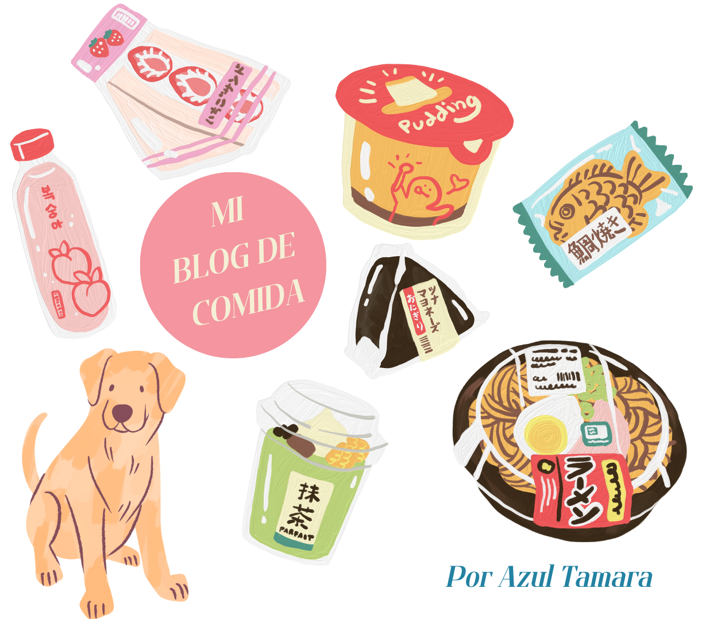
Dentro este Blog hablaré de mis gustos personales de comida. Empezando por mis prefencias favoritas de platillos convencionales. Soy una persona que es muy fanática de lo salado. Me encantan las papas fritas, sopas saladas como el Ramen o la Carbonara. También cosas que lleven mucho sasón como los chilaquiles, un buen sushi y de lo mas dulce que soporto y me encanta, es el yogurt con granola.
Mis comidas Favoritas
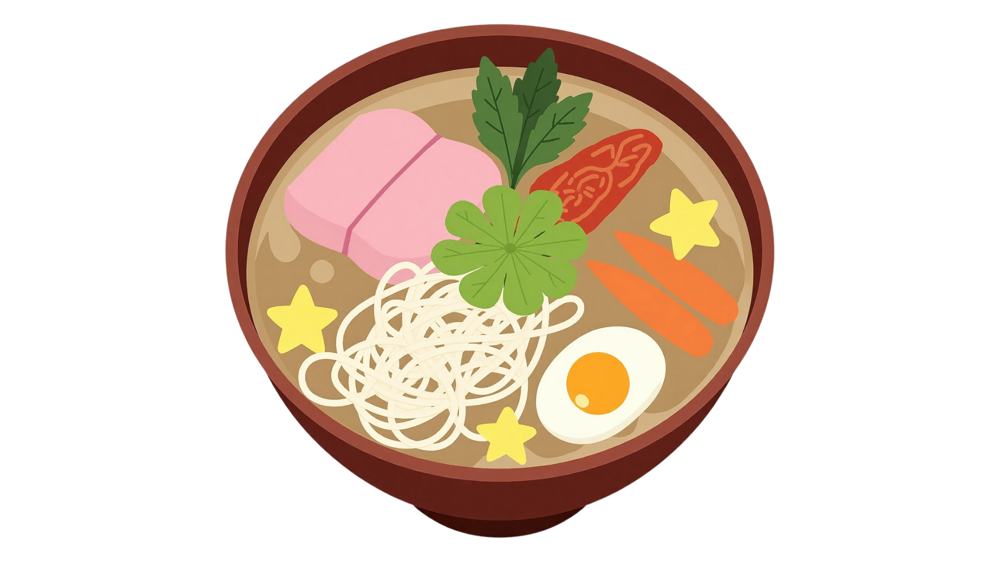
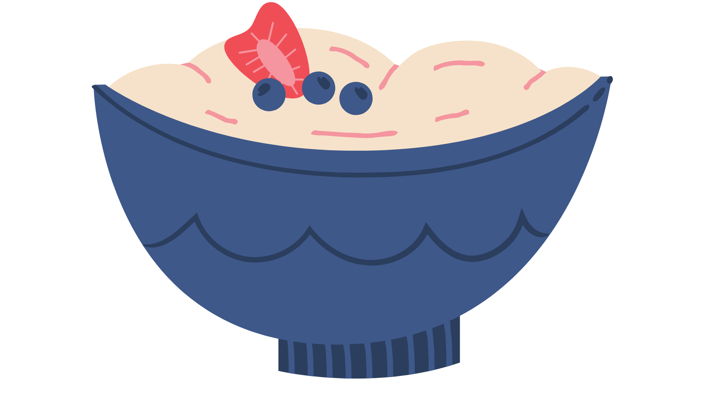
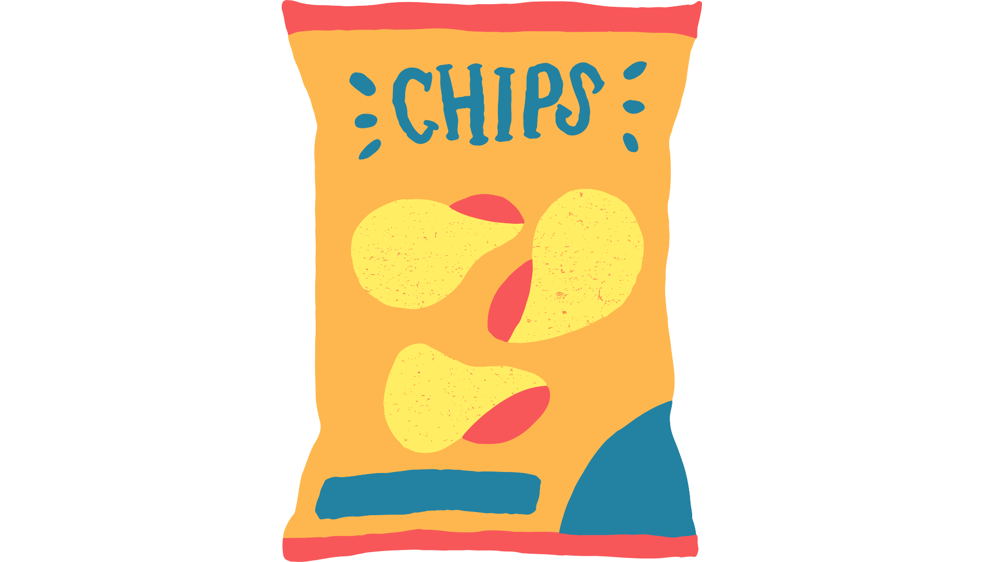
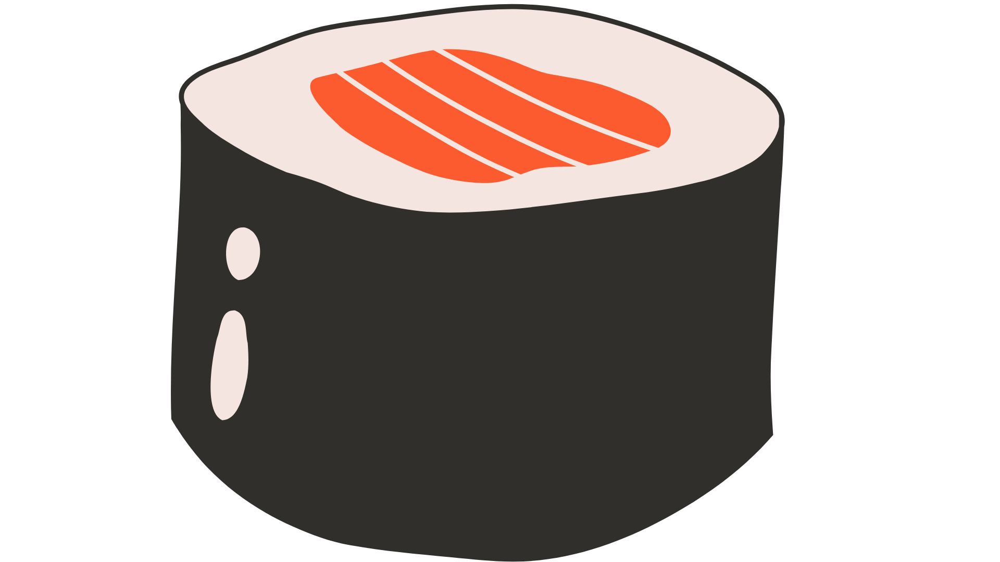
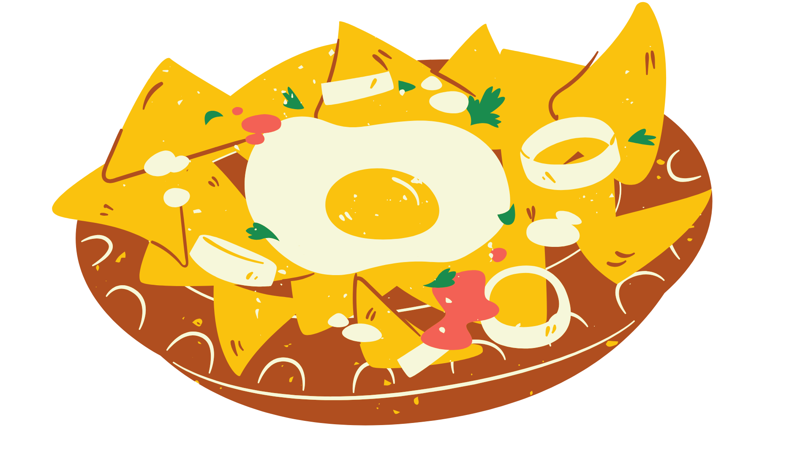
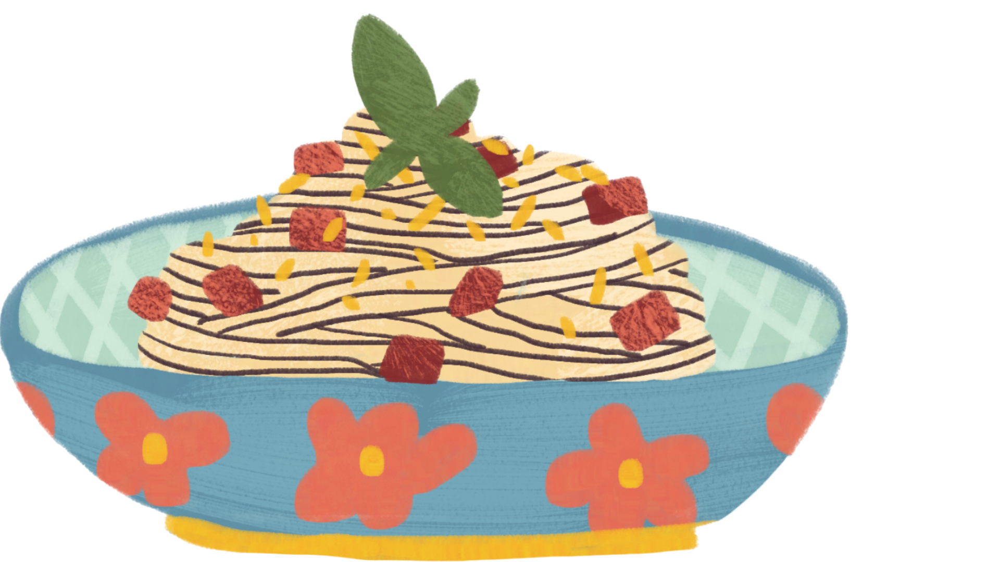
La vida sería muy diferente si no pudieramos disfrutar la comida. Vivir es comer, siempre he dicho. Aún así, siempre habrá platillos no tan favoritos para todos. Mis platillos no tan favoritos para mí, es la mayoría de todas las cosas dulces que saben excesivamente dulces. Golosinas, pasteles de manteca, donas, todo lo muy dulce, no lo soporto. También los sabores sin chistes muy americanizados como un emparedado de queso con pan blanco o un Mcdonalds no lo soporto.Aún así, entiendo que para todo hay preferencias y no juzgaría a alguien por sus gustos.
Mis comidas no favoritas
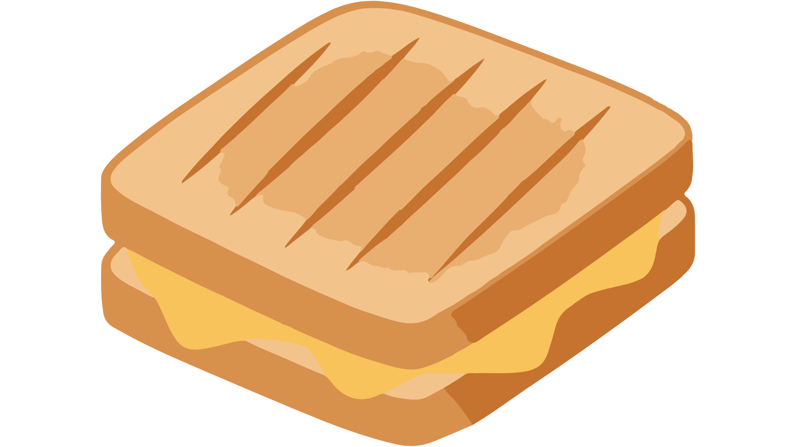
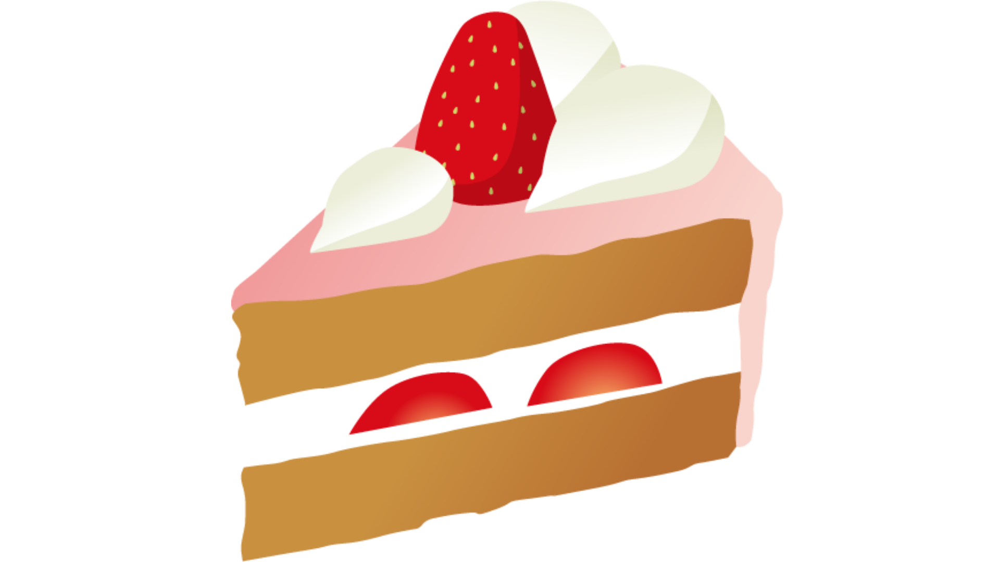
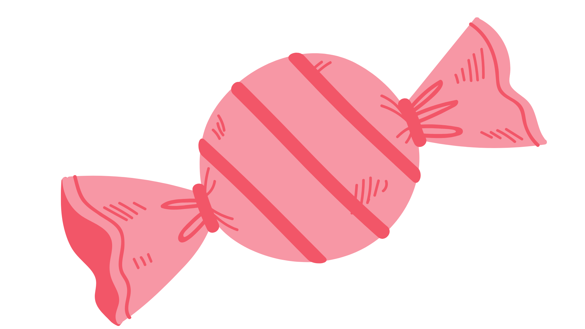
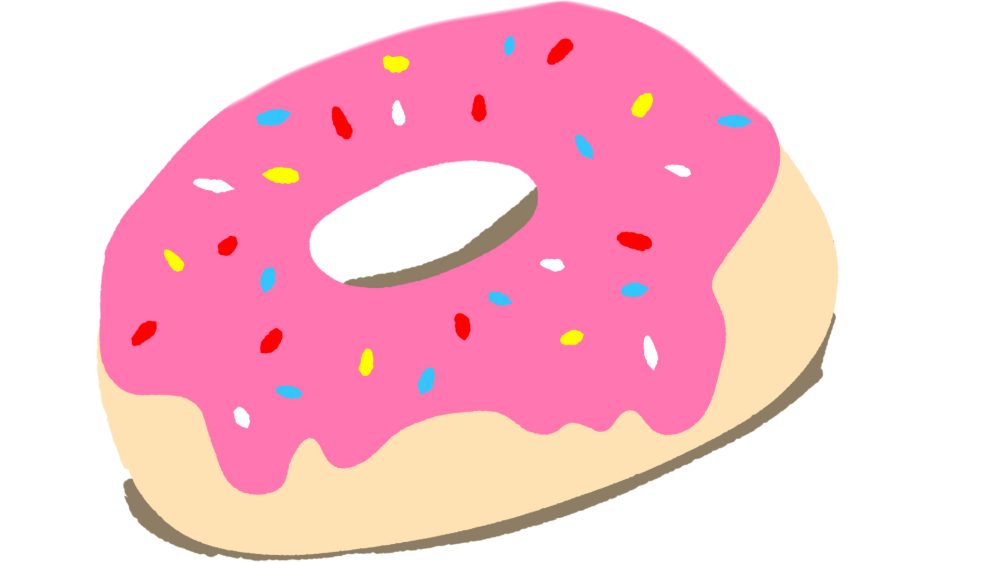
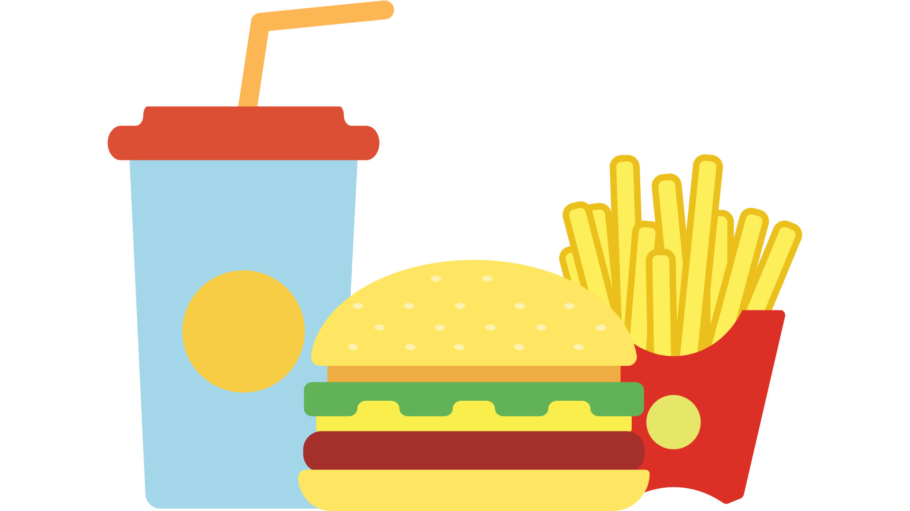